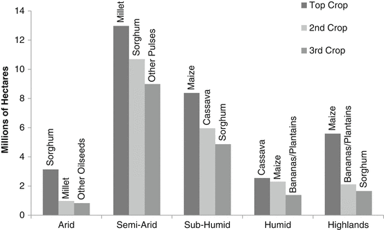

10.1 Introduction
Poverty in Sub-Saharan Africa (SSA) remains predominantly a rural phenomenon and the vast majority of the rural poor are smallholder farmers (World Bank 2007). Many of those farmers are concentrated in areas that have remained unattractive for agricultural development and as a result, demonstrate extremely low agricultural productivity. Such marginal areas have historically offered little return on investment due to low population density or poor access to markets and thus remain marginal precisely because investments to alter their condition have been unfavorable to the public and private sectors (including the farmers themselves), and have not been made. However, as population density increases and market dynamics open, new opportunities and the potential for attractive returns on investment in agricultural development are becoming increasingly promising. In this chapter we introduce an opportunity cost framework to demonstrate where agricultural development is now an opportune strategy to reduce marginality in SSA and to guide strategic priority setting for public investment to sustainably improve agricultural productivity and thereby reduce marginality.
Marginal environments are areas that have been relatively unfavorable for agricultural production due to one or more socioeconomic, technological, or biophysical constraints. Farmers may face constraining factors in the agro-ecological environment (agro-ecological zone or farming system), environmental resource availability, remoteness (distance to markets and services, transportation or communication infrastructure), market access, socioeconomic resources, or an unfriendly policy environment. Some marginal environments are characterized by unfavorable conditions in several of these domains, while others may be considered marginal due to more limited sets of factors (Lipper et al. 2007). Low population density and poor market access limit the attractiveness of investments to enhance agricultural productivity. Today, as population density is increasing and market demand and infrastructure are improving, investments in intensification are becoming increasingly attractive in areas previously considered to be unfavorable.
Many of SSA’s marginal areas, while becoming increasingly favorable for investments to enhance productivity, also pose unique challenges, with important technology and policy implications for ensuring that productivity growth is both pro-poor and sustainable. Poor farmers depend in large part on ‘orphan crops’ such as sorghum and cassava, and face constraints due to poor natural resource endowments and an already degraded resource base. Therefore, effectively reducing marginality through agricultural productivity growth in SSA requires a technology focus on the crops and traits that are important to the poor. Similarly, increasing population density and urbanization pose both an opportunity for agricultural development as well as a constraint, as they also increase pressure on agriculture and the natural resource base. These pressures are further exacerbated by existing environmental degradation and the impacts of climate change. Therefore agricultural development strategies must focus on sustainable intensification. Policy can help to foster the sustainability of productivity growth by addressing the environmental constraints particular to marginal areas and by providing the proper incentives for natural resource use that help reduce or reverse degradation. At the same time, some areas will remain unfavorable for agriculture, such as extremely arid, steep sloped or rocky areas. Policy intervention is also necessary to help keep such areas out of agricultural production and find alternative uses, such as providing ecosystem services.
10.2 Poverty and Marginal Environments in Sub-Saharan Africa
Marginality with respect to agriculture has been conceptualized as areas that are less favorable for agriculture due to both biophysical and socioeconomic factors. These areas are regions that demonstrate low potential for agricultural production due to fragile agricultural resource bases and/or limited access. Most less-favorable areas are uplands, highlands, arid or semi-arid zones where low agricultural productivity results from a variety of constraining environmental factors including limited soil fertility, prohibitive slopes, or unfavorable temperature or hydrological conditions with economic factors such as poor infrastructure or market access. Appropriate production strategies in these areas include perennial and tree crops, rotating cultivation systems, and mixed cropping. The constraints of limited natural endowments are aggravated to begin with by increasing degradation trends, such as soil erosion and compaction, water stress, over-grazing, deforestation, and desertification in the drylands (Ruben et al. 2007).
Quantifying the extent of land area and the size of populations found in marginal areas is challenging, as existing information on these subjects and on local limiting factors are not mutually exclusive. However, looking at the above characteristics in turn—resource endowment and degradation—provides some basic context on marginal lands.
Resource Endowment: Nearly half (43 %) of the African continent is characterized as dryland and therefore environmentally constrained in agro-ecological terms. Drylands include arid, semi-arid, and dry sub-humid agro-ecological zones, as defined by their average growing season length (UNDP 2009). The vast majority of drylands—about 72 %—are in developing countries, where they are home to 13 % of the developing world’s population (Millennium Ecosystem Assessment 2005). In SSA the predominant farming systems in the drylands include migratory livestock herding, agro-pastoral systems, and rainfed mixed cropping (Dixon et al. 2001; Ruben et al. 2007; UNDP 2009). Drought and water stress are the predominant environmental constraints, exacerbated in many areas by land degradation (Adhikari 2011).
Land Degradation: Degraded lands may be defined as areas demonstrating long-term decline in ecosystem function, one aspect of which can measured in terms of declining net primary productivity1 over time (Bai et al. 2008). As of 2003 more than 188 million people in SSA depended directly on degraded lands for their livelihoods and worldwide agricultural lands are substantially over-represented in their share of degraded land area (Bai et al. 2008 and authors’ calculations). Specifically among the drylands, degradation associated with agriculture is slightly more prevalent in the dry sub-humid and semi-arid areas than in the arid regions (Adhikari 2011). Estimates of agricultural productivity loss due to land degradation vary greatly and most are based on expert opinion or assumptions, with few rigorous experimental efforts (Ruben et al. 2007). While numerous studies have found high levels of soil erosion and soil nutrient depletion in several African countries and particularly in the drylands (see Ruben et al. 2007), many have criticized the methods and accuracy of these efforts, leaving little agreement over the extent of the productivity gap resulting from land degradation (Ruben et al. 2007).
10.2.1 Poverty and Marginality
Poverty coincides with marginal environments across SSA. Evidence across nations demonstrates that not only are the poor mainly found in rural areas where agriculture is the main source of income, but also that poverty rates are higher in areas that can be classified as marginal for agricultural production (authors’ calculations; HarvestChoice 2010; FAO 2013). In terms of absolute numbers, more people live in agriculturally favorable environments, so the share of the rural poor living in marginal environments is relatively smaller. However, there is debate regarding the relative incidence and severity of poverty in different types of rural environments and data on the geographic distribution of poverty is extremely limited (Ruben et al. 2007). This debate stems in part from different conceptualizations of marginality as discussed above, though studies in Africa have consistently found that poverty prevalence and severity are often greater in areas less-favored for both environmental and economic reasons across the continent (Ruben et al. 2007).
The relationship between poverty and marginal agricultural environments is even more pronounced for the ultra-poor—those living on less than US$0.75/day—who are often found in semi-arid and arid environments. The ultra-poor are a significant share of the total poor in SSA, approximately 136 million people nearly all of whom (93 %) are farmers (HarvestChoice 2010). Globally, the ultra-poor are becoming ever more concentrated in SSA and South Asia, and are overrepresented in marginal areas (Gatzweiler et al. 2011). Figure 10.1 presents the example of Ghana, where the prevalence of poverty and ultra-poverty in rural areas is highest in the sub-humid and driest regions of the country. Similar analyses have found this trend to be consistent across many countries (HarvestChoice 2010).
Fig. 10.1
Poverty prevalence by agro-ecological zone in Ghana (HarvestChoice 2010)
10.2.2 Agriculture Is an Engine of Growth and Poverty Reduction
Agriculture continues to be an important source of income for rural households across all income levels. In fact a substantial body of evidence supports the relationship between agricultural productivity growth and poverty reduction, demonstrating generally high poverty reduction elasticity for agricultural productivity growth (Hazell 2010; Pingali 2010). Worldwide agricultural growth has been consistently shown to be more effective in reducing poverty than comparable growth in other economic sectors; for instance, on average a 1 % increase in the agricultural growth rate has been estimated to reduce poverty by 1.6 % more than equal growth in industrial sectors and by three times more than in service sectors (Christiaensen and Demery 2007).
In SSA specifically, investment in agriculture contributes 4.25 times more towards reducing poverty than comparable investments in any other sector (Pingali 2010). Furthermore, agriculturally driven growth generates a larger welfare effect than non-agriculturally driven growth, especially for the poorest 20 % of the population (World Bank 2007). Agricultural productivity growth is thus an important lever for poverty and hunger reduction, however, the policy environment must be favorable for intensification in order to incentivize farmers to adopt technologies and practices that increase their productivity (Johnston and Mellor 1961; Lipton 2005; World Bank 2007).
10.3 Agricultural Development Strategies in Marginal Areas
Technological advancements and agricultural development interventions can reduce marginality by addressing the contributing environmental and economic factors where the potential for returns on investments in productivity growth is favorable. Market access and population density largely determine where productivity enhancing technologies and investments are attractive to both farmers and external investors (public and private).
Population density largely determines the relative costs of land and labor, which provides a framework for understanding where intensification is favorable to farmers and what strategies—labor- or land-saving—are likely to be pursued (Pingali 2001). Additional strategies, including both technological and policy interventions, are necessary to improve the sustainability of approaches to productivity growth (Lipper et al. 2007). In Fig. 10.2 we present the opportunity costs of land and labor within a framework for understanding the evolution of production and intensification strategies. We further employed this framework to articulate the appropriate strategies for productivity growth and sustainability to reduce marginality and improve agricultural performance in SSA.
Fig. 10.2
Agricultural development strategies by opportunity cost of land and labor
As population densities rise and the opportunity cost of land increases, farmers have more incentive to increase productivity through intensification strategies that increase yield, such as using more or improved inputs and/or increasing the intensity of cultivation practices. Multiple examples throughout history demonstrate that population pressure has driven shifts from traditional rotational fallow systems to annual and multi-crop cultivation systems (Boserup 1965). Similarly, as the opportunity cost of labor increases, farmers have a growing incentive to employ labor-saving technologies and practices. Market opportunities are important factors in determining the relative scarcity of labor, as employment alternatives increase wage rates and decrease the supply of labor. Factors such as trade integration (as it impacts prices and access to markets), availability of off-farm employment, and overall economic growth also influence the opportunity cost of agricultural labor, the incentive to intensify, and the ability to do so via labor-related savings. These aforementioned labor market dynamics often accompany rising population density, though not always. Intensification may also be found even where population density remains low, if market access is favorable or unique market opportunities (such as niche or quality markets) exist (Pingali 2001).
10.3.1 Agriculture-Environment Interactions in Marginal Areas
Tradeoffs between agriculture and natural resource needs in the environment can be severe with increasing pressure on land, potentially allowing short-term resource availability or productivity gains while undermining the long-term security of ecosystem function (Hazell and Wood 2008; Barbier 2010). Evidence has shown that unsustainable land use and degradation are more likely where population growth occurs rapidly without sufficient simultaneous agricultural intensification relative to that growth (Pingali 2001; Ruben and Kuyvenhoven 2003; Hazell and Wood 2008). While much population growth is taking place in areas that are favorable for agriculture, many marginal environments are witnessing similar trends. For instance, in dryland areas human population growth increased 18.5 % globally between 1990 and 2000, and experts have noted that degradation demonstrates one of the greatest threats to both agricultural productivity and poverty reduction across dryland areas worldwide (Reardon et al. 2002; Millennium Ecosystem Assessment 2005; Adhikari 2011).
Degradation is likely to be most severe where the returns on investments in land improvement are lowest and in regions with a relatively large proportion of marginal lands (Pingali 2001). Intensive cultivation without the addition of capital and inputs to conserve and replace natural resources and nutrients degrades the natural resource base. As resource degradation worsens pressure on rural households increases, and this may deepen poverty and thereby undermine the poverty reduction potential of agriculturally driven growth strategies (Hazell and Wood 2008).
Policy plays a critical role in ensuring that an enabling environment for intensification helps incentivize more sustainable approaches. Effective property rights are a necessary foundation. Where farmers rights to their land are insecure they are likely to opt for practices that yield the greatest benefits in the short-term, leading to underinvestment in land improvements that preserve the natural resource base for long-term productivity (Pingali 2001).
10.4 Agricultural Productivity in Sub-Saharan Africa: Towards a ‘Green Revolution 2.0’
While the second half of the twentieth century was characterized by the Green Revolution (GR) that generated widespread productivity growth and affiliated poverty reduction that lifted millions out of poverty in Asia and Latin America, Africa was largely left out (Pingali 2012). Crop yield growth over the period from 1961 to 2010 was slower in SSA than the global average for nearly all crops, with exceptions only for a few crops (wheat and soybeans) of which Africa’s share of global production is negligible (Pardey et al. 2012). Many areas of SSA have abundant agricultural potential in terms of environmental resource availability, labor, and knowledge, yet productivity has remained extremely low.
The GR package of innovations was most pertinent to areas of high land scarcity that were amenable to rapid intensification. These were densely populated areas with high rainfall or irrigated areas suitable for the major cereal crops: wheat, rice, and maize. That strategy was not appropriate for Africa where population densities were low, market infrastructure was weak, and the poor depended largely on ‘orphan’ crops, with little history of crop improvement research (Binswanger and Pingali 1988; Evenson and Gollin 2003; Webb 2009; Pingali 2012). However, the situation is quite different today, with rising population densities and increasing demand as emphasized already, some areas in Africa have land/labor ratios similar to those in Asia at the start of the GR. This suggests that the incentive to intensify land use is rising and it is already becoming evident that Africa is finally beginning to experience a GR “2.0” (Otsuka and Kijima 2010; Pingali 2012).
For SSA, intensification is thus a promising strategy to reduce marginality where rising population densities and improving market access and opportunities offer substantial returns. In these areas agricultural development must prioritize removing the key constraints that contribute to their environmental and economic marginality, including basic crop improvement for the ‘orphan crops’ that have little history of agricultural research and development, management strategies appropriate to resource-limited environments, and stress tolerance. Addressing agricultural-environmental tradeoffs must focus on leveraging win-win opportunities that do not compromise productivity in the short- or long-term.
10.4.1 Substantial Yield Gaps Remain
Despite potential and budding GR 2.0 momentum, substantial yield gaps remain in SSA. Poor productivity is a multi-faceted problem resulting in large part from low investment in research, low input usage, limited market access, poor policy and regulatory environments, and environmental constraints. Large public investments in agricultural research and development (R & D) were responsible for the GR’s success in increasing productivity and drastically reducing poverty and hunger across much of Asia (Hazell 2010; Herdt 2010). However, such investments have dropped off dramatically since those made during the GR period (1966–1985).
What crops are important to the poor? Across all agro-ecological zones of SSA the most important crops in terms of area harvested include: sorghum, millet, cassava, maize, oilseeds, pulse beans, and bananas/plantains. Of this list only maize has a history of substantial R & D investment in crop improvement, the others typically fall into the category of ‘orphan crops’ that have historically received little R & D attention. Figure 10.3 illustrates the most important crops for the five major agro-ecological zones of SSA according to production area (HarvestChoice 2010). Sorghum, millet, and cassava are prominent across zones, but more so in the marginal areas, particularly dryland zones.

Fig. 10.3
Top ranked tropical crops in Sub-Saharan Africa by major agro-ecological zone (HarvestChoice 2010)
Quantifying yield gaps. Yield gaps represent the most economically feasible potential for improving yields based on currently available technologies, though new technologies may make closing this yield gap easier or more feasible with fewer inputs. The percentage of that yield gap that can be ‘closed’ with existing technologies and under a certain set of conditions provides an estimate for the overall potential for yield gains. Across SSA there is a substantial estimated yield gap for all of the three top ranked crops in every major agro-ecological zone. For example, as Figs. 10.4 and 10.5 illustrate, estimated yield gaps in sorghum and cassava are 512–73 % respectively (HarvestChoice 2010).
Fig. 10.4
Yield gaps for sorghum in Sub-Saharan Africa (HarvestChoice 2010)
Fig. 10.5
Yield gaps for cassava in Sub-Saharan Africa (HarvestChoice 2010)
Yield gaps for the other top ranked crops in SSA are equally high. For millet the estimated yield gap is 404 %, for bananas and plantains it is estimated to be 81 %. “Other oilseeds” and “other pulses” presented in Fig. 10.4 represent aggregate categories of minor crops that are estimated to have an average yield gap close to 300 %. Even for maize, the only crop ranked among the most important in SSA that has benefitted from substantial investment in crop improvement, a significant average yield gap of 287 % exists as illustrated in Fig. 10.6.
Fig. 10.6
Yield gaps for maize in Sub-Saharan Africa (HarvestChoice 2010)
10.4.2 Technology Priorities
Productivity constraints and the resulting yield gaps in SSA demonstrate substantial market failures in the provision of R & D and infrastructure investments, where neither private firms nor national governments have sufficient incentive to invest. The case for international public sector investment in basic science and agricultural R & D to serve the poor is clear: neither the private sector nor individual country governments have sufficient incentives to invest in the necessary upstream research to develop appropriate technologies for the crops and traits that are important to the poor. The poor do not offer a value proposition to the private sector and many of the benefits will be accrued by others outside of a particular country’s borders. Therefore an investment gap exists for such international public goods. Just as it was necessary to spur the GR, the international public sector, such as the CGIAR, is needed to close the yield gaps in SSA (CGIAR 2000). Reducing marginality through agricultural development is possible with public investment focused on basic R & D and improved delivery of goods and services to farmers, and to better understand and respond to their needs.
Upstream basic science and crop improvement. First, upstream R & D is needed to fill the gap in basic crop improvement for the ‘orphan crops.’ These are the most important crops to the poor in marginal areas of SSA and basic crop improvement can have substantial impacts on improving the favorability of drylands for agricultural production. Targeting R & D to appropriate agro-ecological conditions will maximize the spillover benefits to other areas and increase resilience to climatic shocks.
In addition to shifting the yield frontier, public R & D efforts ought to focus on developing stress-tolerant crop varieties with resistance to both biotic (e.g., pests, disease) and abiotic (e.g., drought, flood) stresses. Such stresses characterize many of SSA’s marginal environments and improving farmers’ resilience to such risks will reduce their marginality and expand the areas that are favorable for sustainable agricultural intensification. For example, submergence-tolerant rice and drought-tolerant maize varieties provide options that reduce farmers’ risks and improve incentives to invest in additional productivity enhancing technologies. Furthermore, environmental risks and stresses are now becoming increasingly frequent, less predictable, and shifting geographically as the climate changes.
Downstream innovation in delivery. Investment and innovation are also needed to improve the science of delivering information and technology options to farmers, as well as for gathering information from farmers to ensure that public sector investments are responsive to their needs. Adapting existing technologies for local agro-ecological and environmental conditions the poor face offers particularly low-hanging fruit for productivity gains in SSA. Increasing feed demand and emerging biofuel markets also create new opportunities for farmers in more marginal areas to produce crops for non-food markets (Binswanger-Mkhize and McCalla 2010). However, increasing access to technologies and markets must be accompanied by concurrent improvements in market strength and function. Ensuring that farmers have access to the knowledge and products that can increase their productivity is insufficient to achieve widespread productivity gains and increase favorability for agricultural intensification if markets are unable to reliably provide the necessary inputs, absorb increased outputs, and improve price stability.
10.4.3 Policy and Institutional Priorities
Public policy plays an important role at the national level in ensuring that productivity-enhancing technologies and innovations both reach and benefit smallholder farmers. Focusing on agriculture as an engine of economic growth and poverty reduction requires policy interventions and investments at both the national and international levels to ensure an enabling environment that is favorable for smallholders increasing their productivity sustainably.
Focus on agriculture as an engine of economic growth and poverty reduction. In recent years SSA country governments and international donors have demonstrated renewed interest in agriculture as an engine of economic growth and poverty reduction as evidenced by regional increases in donor aid and government commitments for agricultural development (Pingali 2012). The trend is positive, but continued attention is necessary to keep agriculture on the regional policy agenda. Sustainably increasing agricultural productivity and reducing marginality and poverty in SSA will require policy interventions to: (1) sustain investment in agricultural R & D, (2) improve regulatory and trade policy, and (3) improve infrastructure.
Although public investment in agriculture has increased since 2006, and particularly after the food price crisis of 2008, public sector R & D investment in SSA still remains low despite the fact that countries there continue to rely on agricultural productivity to drive hunger and poverty reduction (Lipton 2005; World Bank 2007). Agricultural R & D in a large number of developing countries exhibited a negative growth rate in recent decades. On average, public spending in SSA increased by only 0.6 % per year from 1981 to 2000, however, half of the countries actually spent less in 2000 on agricultural R & D than a decade prior (Beintema and Elliott 2009).
In addition to limited public sector investment, poor regulatory environments limit the incentives for private sector engagement along supply chains. A favorable enabling environment for innovation requires policies and regulations that ensure intellectual property rights that guarantee that private benefits can be captured as returns on investments. Functional and transparent biosafety regulations are also important for reducing risk and uncertainty that otherwise jeopardize potential returns and discourage investment (Pingali 2012). Weak regulation and high transaction costs for private sector development more broadly, such as a lack of licensing, price limits, or existing cartels, limit market development from R & D to the distributions of inputs and agricultural products that would be necessary to achieve broad productivity, food security, and poverty reduction goals on the continent. Effective regulation and transparency require effective institutions to encourage and govern, for instance, the distribution of agricultural inputs and outputs. Such enabling factors are necessary preconditions to grow and sustain agricultural markets, yet remain weak or nonexistent in many countries (World Bank 2012). Lastly, existing policies governing agricultural R & D and other technologies often inhibit accessing and employing modern tools such as biotechnology to innovate on behalf of poor farmers, to improve food security, and to protect environmental interests.
Some policies can actually counteract the impacts of official development assistance, such as in the cases of trade and investment. African farmers actually face the highest trade barriers in the world with respect to accessing the inputs that they need and in getting their food to markets and consumers (World Bank 2012). The lack of transparency around regulations over food safety and quality standards, in addition to protectionist policies, impede the cross-border trade of inputs and agricultural products within the region that could benefit producers as well as strengthen markets, lower transaction costs, and lower food prices for consumers. For example, tariffs and quotas vary and are often poorly communicated, which creates market uncertainty that further limits cross-border trade and contributes to food price volatility (World Bank 2012).
Rural roads and transportation infrastructure are limited in many countries of SSA, and distribution networks for inputs and agricultural products are poor. Transportation costs in Africa remain high, though not necessarily due primarily to poor roads as is often presumed. A recent study from the World Bank found that the lack of investment and competition in transport services is the primary factor contributing to high transportation costs in SSA: cartels are still common in the transportation sector and roadblocks continue to undermine efficiency, weakening incentives to invest in modern logistics networks. The World Bank estimates that reducing transportation costs by 50 % would lead to increases in agricultural GDP of 7.0 % in Mozambique and 3.0 % in Malawi. Limited cross-border trade, due mainly to the existing policy and regulatory environments discussed above, further compounds the negative impacts of weak transportation networks and impedes the ability of farmers to access markets and move goods from areas of surplus to centers of demand (World Bank 2012).
Build local capacity for sustainable productivity growth. An enabling policy environment for sustainable smallholder productivity growth must involve and be responsive to the needs of farmers and local communities. At the local level a community-driven development approach offers a model for capacity building and local engagement that focuses on empowering local communities to lead their own development processes. These incorporate five central components, including: empowering communities and local governments, creating joint responsibility and control between local and central authorities, improving accountability, and developing capacity (Binswanger and Nguyen 2004). At the national level, investments in systems—both institutional reform and infrastructure investment—are needed. For example, this includes ensuring that national scientific facilities have access to modern equipment, investing in training and development of local scientists and policymakers, and ensuring that the right information and data are available to policymakers and decision makers throughout supply chains in order to foster informed decisions regarding agricultural development strategies.
10.4.4 Technology and Policy Priorities for Sustainable Intensification
Promoting sustainable intensification strategies can reduce the threat of environmental degradation and foster long-term productivity. While poverty and environmental degradation often coexist, the impact of one on the other and the direction of that causality are not yet well understood. While many argue that poverty is a driver of environmental degradation, the evidence is not conclusive. Recent gains in poverty reduction have not demonstrated parallel gains in sustainable resource management (Hazell and Wood 2008). This underscores the critical importance for sustainable intensification strategies that both preserve and enhance the natural resource base in areas where agricultural development offers a promising strategy to reduce marginality and poverty. Sustainable intensification requires policies that provide incentives to farmers for preserving and improving the natural resource base and that will ensure the capacity for both short- and long-term productivity growth.
Create incentives for the sustainable use of natural resources. Farmers need the proper incentives to use resources judiciously and efficiently. Low output prices due to a lack of market access or market distortions undervalue natural resource and other inputs, reduce farmers’ profitability, and decrease incentives for investment in more sustainable farming practices or intensification (Ruben and Kuyvenhoven 2003). Across SSA smallholder access to and ability to invest in improved inputs is severely limited. Poor market access and high costs lead to low investment in land improvement. For example, SSA has seen extremely limited use (or the complete lack) of fertilizers, resulting in declining soil fertility (Ruben et al. 2007). Average fertilizer applications per hectare in SSA peaked in the 1980s at 10 kg/ha, returning since to the mean 1970s level of 7.0 kg/ha during the years 2001–2007, which is the period for which the most recent data are currently available (Binswanger-Mkhize 2012). However, as intensification rises, so do returns on soil fertility improvements and other productivity investments such as small-scale irrigation. Additionally, regulations and market mechanisms (i.e., payments for ecosystem services, carbon finance) both offer potential avenues to change incentives for natural resource use, however, building the capacity and informing the design of appropriate institutions to implement and regulate these policy interventions in SSA is still needed.
Crop management practices can also be employed to strengthen the natural resource base for more sustainable productivity growth. For instance, nutrient management and plant protection can increase productivity while reducing environmental degradation and potentially improving natural resource bases. For example, a variety of agronomic, biological, and mechanical techniques exist to enhance soil fertility, structure, and availability/uptake of nutrients. Win-win strategies in this regard include integrated soil fertility management and intercropping. Crop rotation and intercropping practices also offer protection against pre-harvest losses. Combining biological, cultural, genetic, and chemical techniques through integrated pest management can improve plant protection relative to inorganic pesticides, which often lose their effectiveness as the species they target adapt. Additionally, water management techniques such as household- and watershed-level planning to decrease the variability of water availability are also productivity-enhancing measures, including: water-harvesting techniques, surface water diversion, and irrigation (Ruben et al. 2007). Many of these strategies are knowledge-intensive and must be complimented with the aforementioned investment and innovation in downstream delivery of information to farmers.
Intensify to release marginal lands from agriculture. Promoting intensification on lands that have high agricultural potential (i.e., where returns on agricultural development are favorable) will allow for the release of agriculturally marginal and ecologically fragile lands from agricultural production, allowing them to provide other ecosystem services such as increased carbon sequestration through carbon stock regeneration. Where the opportunity costs of land and labor both remain low—such as very arid, steep sloped, or rocky areas—returns on investment in sustainable intensification will continue to be low as well. By moving these marginal areas out of agricultural production, they will be available to provide other ecosystem services.
Valuing Ecosystem Services. In the long-term our ability to value and pay for ecosystem services could be a critical means of addressing agricultural-natural ecosystem tradeoffs. In the short-term establishing the analytical groundwork and incorporating the value of natural resources into policy decision making are important steps, however, neither the metrics nor the institutional frameworks are sufficiently established to directly pay or penalize smallholder farmers at the local level. Policy priorities in the short-term should include macro-level interventions to establish an enabling environment, such as the removal of perverse subsidies to agricultural, fisheries, and energy sectors that cause harm to people and the environment (Pingali 2012). These can be complimented in the long term by appropriate payment mechanisms for ecosystem services that will improve incentives for farmers to pursue the dual objectives of productivity and maintaining natural resource bases at the production level. Investment must also focus on the establishment of metrics that are meaningful scientifically and the institutional infrastructure to implement successful payment for ecosystems services schemes that could reach and benefit smallholder farmers.
10.5 Conclusion
The marginal areas of SSA have historically been unfavorable for agricultural productivity improvements due to environmental and/or economic constraints. Up to now they have largely remained marginal because circumstances have not made investment in unlocking the constraints underlying their marginal status attractive. Low returns on potential investments for agricultural development in SSA have been driven in large part by low population densities and poor market access. However, demographic shifts in SSA are making productivity enhancing investments more attractive in many areas of SSA, where demand is rising and the opportunity costs of land and labor are increasing. As such, agricultural development now offers new opportunities to reduce marginality and poverty, and to increase the sustainability of agricultural production strategies. Capitalizing upon these opportunities requires careful attention to the opportunity costs of land and labor, pursuing intensification where it makes sense, and releasing marginal lands from agricultural pressures where returns on productivity growth investments will continue to remain low in order to allow these areas to provide natural ecosystem services.
While SSA offers new opportunities for decreasing marginality through agricultural intensification, poor environmental endowments, widely degraded lands, and the threat of climate change require that productivity growth be achieved as sustainably as possible. Investing in targeted R & D both upstream and downstream to address SSA’s particular constraints—especially focusing on the crops and traits that are important to the poor and the particular environmental conditions they face—can dramatically increase the continent’s agricultural productivity, lessen marginality, and contribute to widespread reductions in poverty. Concurrent policy interventions are necessary to create an enabling environment for productivity, including reducing distortions in trade policies, improving infrastructure, and improving the regulatory environment for scientific innovation. Population and market dynamics open new opportunities for productivity growth in the near-term. Careful strategies to mitigate agricultural-environmental tradeoffs will ensure that productivity potential is better preserved in the long term.
References
Adhikari B (2011) Poverty reduction through promoting alternative livelihoods: implications for marginal drylands. J Int Dev. doi:10.1002/jid.1820
Bai ZG, Dent DL, Olsson L, Schaepman ME (2008) Global assessment of land degradation and improvement. Identification by remote sensing. Report 2008/0, International Soil Reference and Information Center, University of Wageningen, Wageningen
Barbier EB (2010) Poverty, development, and environment. Environ Dev Econ 15(06):635–660CrossRef
Beintema N, Elliott H (2009) Setting meaningful investment targets in agricultural research and development: challenges, opportunities and fiscal realities. In: Proceedings of the expert meeting on how to feed the world in 2050, Rome. Food and Agriculture Organization of the United Nations, Rome, 24–26 June 2009
Binswanger-Mkhize HP, McCalla A (2010) The changing context and prospects for agricultural and rural development in Africa. In: Pingali P, Evenson R (eds) Handbook of agricultural economics. Elsevier BV, Amsterdam
Binswanger-Mkhize HP (2012) The role of agriculture in the structural transformation. In: Timmer P, McMillan M, Badiane O, Rodrik D, Binswanger-Mkhize HP, Wouterse F (eds) Patterns of growth and structural transformation in Africa: trends and lessons for future development strategies. International Food Policy Research Institute, Washington, DC, pp 10–11
Binswanger HP, Nguyen T (2004) Scaling up community-driven development for dummies. World Bank, Washington, DC
Binswanger HP, Pingali P (1988) Technological priorities for farming in Sub-Saharan Africa. World Bank Res Obs 3:81–98CrossRef
Boserup E (1965) The conditions of agricultural growth. Allen and Unwin, London
CGIAR (2000) CGIAR research priorities for marginal lands. Consultative Group on International Agricultural Research Technical Advisory Committee, Food and Agriculture Organization of the United Nations, Rome
Christiaensen LJ, Demery L (2007) Down to earth: agriculture and poverty in Africa. Working paper no 2010/35, World Bank, Washington, DC
Dixon J, Gulliver A, Gibbon D (2001) Farming systems and poverty: improving farmers’ livelihoods in a changing world. Food and Agriculture Organization of the United Nations and World Bank, Rome/Washington, DC
Evenson RE, Gollin D (2003) Assessing the impact of the green revolution, 1960 to 2000. Science 300:758–762CrossRef
FAO (2013) Rural Income Generating Activities (RIGA). Food and Agriculture Organization of the United Nations, Rome. Available at http://www.fao.org/economic/riga/riga-database/ en/
Gatzweiler F, Baumüller H, von Braun J, Ladenburger C (2011) Marginality: addressing the root causes of extreme poverty. ZEF working paper no 77, Center for Development Research, University of Bonn, Bonn
HarvestChoice (2010) Commissioned research. International Food Policy Research Institute, Washington, DC
Hazell P (2010) An assessment of the impact of agricultural research in South Asia since the green revolution. In: Pingali P, Evenson RE (eds) Handbook of agricultural economics, vol 4. Elsevier BV, Amsterdam, pp 3469–3530CrossRef
Hazell P, Wood S (2008) Drivers of change in global agriculture. Philos Trans R Soc Lond B Biol Sci 363(1491):495–515CrossRef
Herdt R (2010) Development aid and agriculture. In: Pingali P, Evenson RE (eds) Handbook of agricultural economics, vol 4. Elsevier BV, Amsterdam, pp 3253–3304CrossRef
Johnston B, Mellor J (1961) The role of agriculture in economic development. Am Econ Rev 51:566–593
Lipper L, Pingali P, Zurek M (2007) Less-favoured areas: looking beyond agriculture towards ecosystem services. In: Ruben R, Pender J, Kuyvenhoven A (eds) Sustainable poverty reduction in less-favoured areas. CABI Publishing, Wallingford, pp 442–460CrossRef
Lipton M (2005) The family farm in a globalizing world: the role of crop science in alleviating poverty. International Food Policy Research Institute, Washington, DC
Millennium Ecosystem Assessment (2005) Ecosystems and human well-being: current state and trends, vol 1. Island Press, Washington, DC
Otsuka K, Kijima Y (2010) Technology policies for a green revolution and agricultural transformation in Africa. J Afr Econ 19:ii60–ii76CrossRef
Pardey PG, Alston JM, Kang CC (2012) Agricultural production, productivity and R & D over the past half century: an emerging new world order. Plenary paper presented at the International Association of Agricultural Economists (IAAE) Triennial Conference, Foz do Iguacu, 18–24 August 2012
Pingali P (2001) Population and technological change in agriculture. In: Smelser NJ, Baltes PB (eds) International encyclopedia of the social and behavioral sciences. Elsevier Science Ltd, Oxford, pp 11742–11744CrossRef
Pingali P (2010) Agriculture renaissance: making “agriculture for development” work in the 21st century. In: Pingali P, Evenson RE (eds) Handbook of agricultural economics, vol 4. Elsevier BV, Amsterdam, pp 3867–3894CrossRef
Pingali P (2012) Green revolution: impacts, limits, and the path ahead. Proc Natl Acad Sci U S A 109:12302–12308CrossRef
Reardon T, Barrett C, Kelly V, Savadogo K (2002) Policy reforms and sustainable agricultural intensification in Africa. Dev Policy Rev 17:375–395CrossRef
Ruben R, Kuyvenhoven A (2003) Investing in poor people in less-favoured areas: institutions, technologies and policies for poverty alleviation and sustainable resource use. Paper presented at the international conference on staying poor: chronic poverty and development policy, University of Manchester, Manchester, 7–9 March 2003
Ruben R, Pender J, Kuyvenhoven A (2007) Sustainable poverty reduction in less-favoured areas: problems, options and strategies. In: Ruben R, Pender J, Kuyvenhoven A (eds) Sustainable poverty reduction in less-favoured areas. CABI Publishing, Wallingford, pp 1–62CrossRef
UNDP (2009) Climate change in the African drylands: options and opportunities for adaptation and mitigation. United Nations Development Programme, New York
Webb P (2009) More food, but not yet enough: 20th century successes in agriculture growth and 21st century challenges. In: Eiselen H (ed) Fiat panis: for a world without hunger. Hampp Media/Balance Publications, Stuttgart
World Bank (2007) World development report 2008: agriculture for development. World Bank, Washington, DCCrossRef
World Bank (2012) Africa can help feed Africa: removing barriers to regional trade in food staples. World Bank, Washington, DC
Footnotes
1
The net rate at which vegetation fixes carbon dioxide from the environment, estimated by remotely sensed proxy indicators.